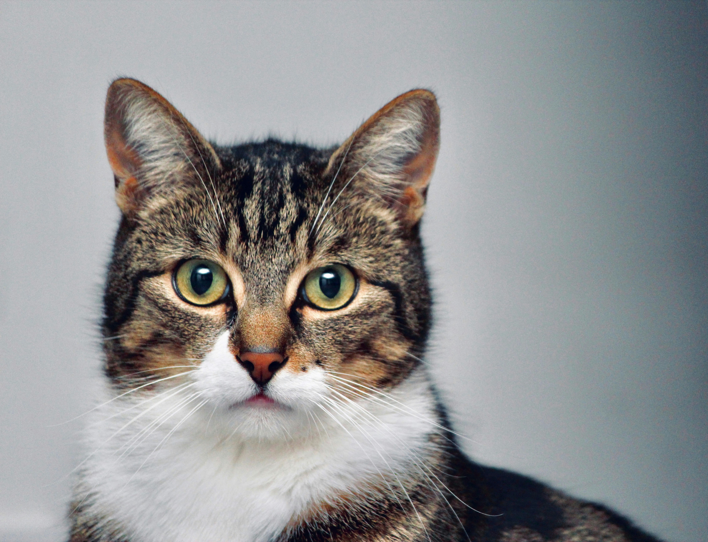

すべての猫に、 安心できる居場所を。
行き場を失った猫たちを、新しい家族へつなぐ保護猫サポート
里親募集中の猫を見る保護猫活動について
あおねこは、さまざまな事情で行き場を失った猫たちを保護し、 新しい家族につなぐことを目的とした保護猫サポート団体です。
野外での保護活動、医療ケア、不妊・去勢手術を行い、 猫たちが安心して過ごせる環境づくりを大切にしています。
猫と里親さま双方が幸せに暮らせるよう、 丁寧なマッチングを心がけています。
主な活動内容
- 🐾 行き場を失った猫の保護
- 🏥 医療ケア・不妊去勢手術
- 🏠 里親募集・譲渡サポート
- 🤝 譲渡後の相談サポート
里親募集中の猫たち

あお（推定2歳）
人懐っこくて甘えん坊な男の子。
ご支援のお願い
あおねこでは、保護された猫たちが安心して過ごせるよう、 日々お世話や医療ケアを行っています。
医療費やフード代、保護環境の維持には費用がかかります。 皆さまのご支援が猫たちの命を支えています。